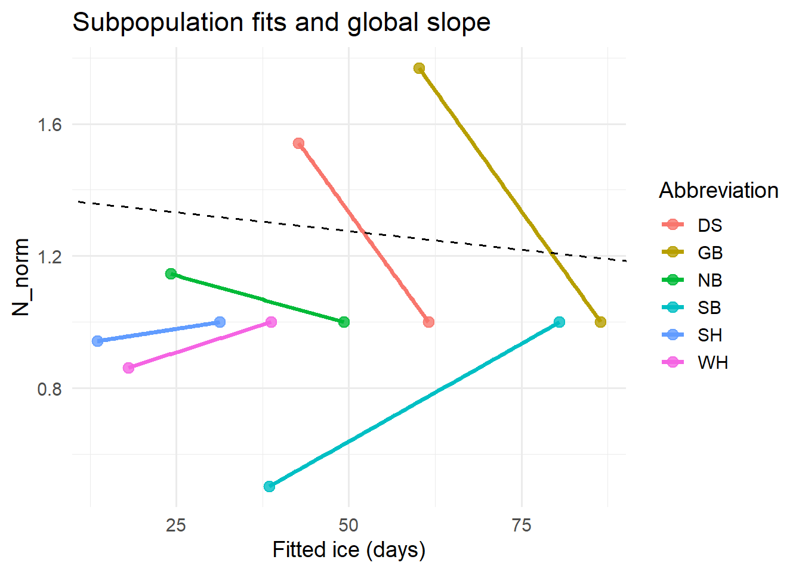
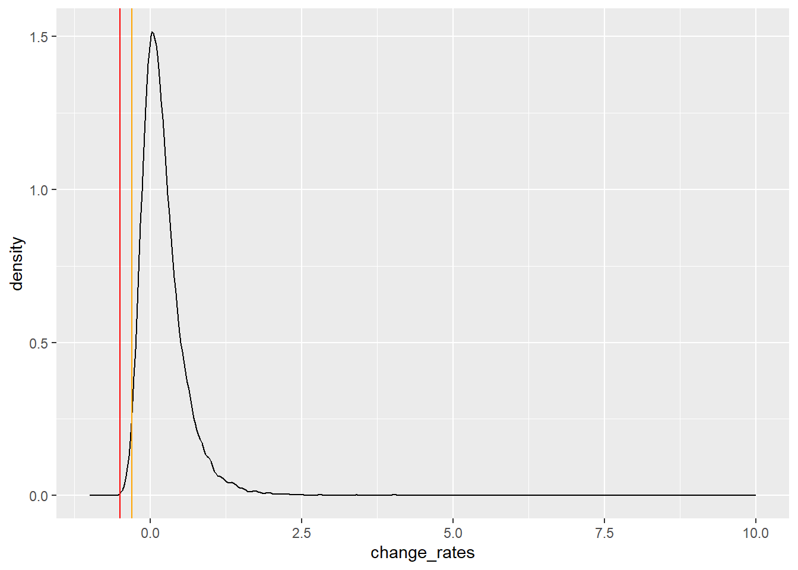

# A tibble: 6 x 4
Abbreviation `Generation length(years)` `95% CI lower` `95% CI uppper`
<chr> <dbl> <dbl> <dbl>
1 DS 10.3 9.7 10.9
2 GB 12.6 11.6 13.5
3 NB 11.4 10.7 12.2
4 SB 10.7 10.3 11.2
5 SH 10.5 10 11
6 WH 13.7 13.4 14 IUNC Red List Assessment: Polar Bear
Report
1. Introductions
Polar Bears (Ursus maritimus) are facing a range of threats that might impact their future population status. This report reproduced the IUCN Red List Assessment of Polar Bears with some modifications, using a probabilistic approach to take into account uncertainties in the assessment.
We assumed and estimated linear relationships between habitat availability and Polar Bear abundance. The approach to assess the category of Polar Bear is that estimating a global ice-abundance relationship using a reduced dataset that included a maximum of two abundance estimates for each subpopulation, and then used these relationships to predict future abundance of each subpopulation as a function of predicted sea-ice conditions. Under this approach, the six subpopulations with at least two estimates of abundance exerted similar influence on the ice-abundance relationship.
2. Methods
2.1. Generation Length
Modification: They propagate percentiles, but you are to use a probabilistic approach to take into account uncertainties in the assessment.
GL: Generation Length (years)
The mean of subpopulation GL mean estimates was 11.5 years (95% CI = 9.8, 13.6).
Mean generation length of 6 selected subpopulations:
2.2. Sea Ice
Modification: You are to consider recent projections on the Last Ice Area.
The sea-ice metric ice: the number of days per year (1979-2014) that sea-ice area exceeded the threshold T.
\[ ice = B_0 + B_{year} \times year + \epsilon \]
The threshold area (denoted T) was chosen as the midpoint of the mean September sea-ice area (denoted Area_Sept) and the mean March sea-ice area (denoted Area_March):
\[ T = Area\_Sept + 50\% \times (Area\_March - Area\_Sept) \]
Ice slope of 6 selected subpopulations:
# A tibble: 6 x 3
Abbreviation Slope SE
<chr> <dbl> <dbl>
1 DS -1.71 0.367
2 GB -1.88 0.368
3 NB -0.93 0.328
4 SB -1.75 0.363
5 SH -0.68 0.239
6 WH -0.86 0.2172.3. Population Projections
2.3.1. Abundance Estimates
Abundance(N) estimates for 6 selected subpopulations:
# A tibble: 12 x 3
Abbreviation Year Estimate_Abundance
<chr> <dbl> <dbl>
1 DS 1996 1400
2 DS 2007 2158
3 GB 1986 900
4 GB 2000 1592
5 NB 1979 876
6 NB 2006 1004
7 SB 1986 1800
8 SB 2010 907
9 SH 1986 1000
10 SH 2012 943
11 WH 1987 1194
12 WH 2011 10302.3.2. Statistical Models and Computer Simulation
Projections started in the year 2015 and ended in year t = 2015 + (3 × GL).
Normalization of abundance was performed separately for each subpopulation i:
\[ N^{norm}_i = \frac{N_i}{N^1_i} \]
\(N_i\) is either the first or second available abundance estimate
\(N^1_i\) is the first available abundance estimate.
The table below is abundance(N) estimates added by a new column N_norm:
# A tibble: 12 x 4
Abbreviation Year Estimate_Abundance N_norm
<chr> <dbl> <dbl> <dbl>
1 DS 1996 1400 1
2 DS 2007 2158 1.54
3 GB 1986 900 1
4 GB 2000 1592 1.77
5 NB 1979 876 1
6 NB 2006 1004 1.15
7 SB 1986 1800 1
8 SB 2010 907 0.504
9 SH 1986 1000 1
10 SH 2012 943 0.943
11 WH 1987 1194 1
12 WH 2011 1030 0.863The linear model for Approach 2 included an intercept for each subpopulation and a single, global slope coefficient：
\[ N^{norm} = \Sigma_i B_i + B_{Global} \cdot fitted.ice + \Sigma_i \epsilon_i \]
For each draw of starting abundance for subpopulation i, we predicted mean abundance in year t as:
\[ N_{i,t} = N_{i,2015} + \Delta N_{i,t} \times N_{i,2015} \]
Finally, we calculated percent change in mean global population size as:
\[ \Delta G = 100 \times \frac{G_t - G_{2015}}{G_{2015}} \]
3. Results
Modification: You are also to assess uncertainty in the conclusion which could be different from the conclusion in the Red List Assessment.
Here is a linear model using the mean gl and fixed value of ice slope and N_norm, and the global slope is -0.0023:

By using Monte Carlo simulation, the global rates of change of Polar Bear population size was estimated.
Min. 1st Qu. Median Mean 3rd Qu. Max.
-0.47631 -0.02695 0.13873 0.21617 0.36658 4.73715 
After three generations, this approach suggested a median percent change in mean global population size of 21.62% (95% CI = -26.51%, 115.67%). The corresponding probability of a decline greater than 30% was approximately 0.0141, and the probability of a decline greater than 50% was approximately 0.